一頁看完:這片做了什麼、實際跑起來長什麼樣、還有哪兩件事沒做完。
你上次送出報告時如果斷網、當機、或還沒送完就關掉,那份報告不會消失,也不會擋住你——它變成 Quacket 視窗裡的一列狀態,旁邊照樣可以打新的報告。
不擋這次驗收,但你先知道,等下看到不會嚇到。收尾時你決定要現在修、之後修、還是不修。
下面每一段都是一條你當初拍板的驗收項,寫成「什麼情況 → 你會看到什麼」,附一張 QA 實跑的畫面截圖(不是示意圖,是真的跑出來拍的)。你逐條看、逐條說「對,這是我要的」,不對就講,我當場分類。
想自己摸的話,一行指令就能把同款環境開起來:
bash docs/qa/29/replay.sh
驗收項 13
什麼情況:上次有份報告沒收完尾,你重開 Quacket。
你會看到:視窗上方多一列字:「Your report from last time is still pending.」旁邊一顆看得見的 Check again 按鈕。沒有彈窗、沒有擋住輸入框、不用先處理它才能做別的事。
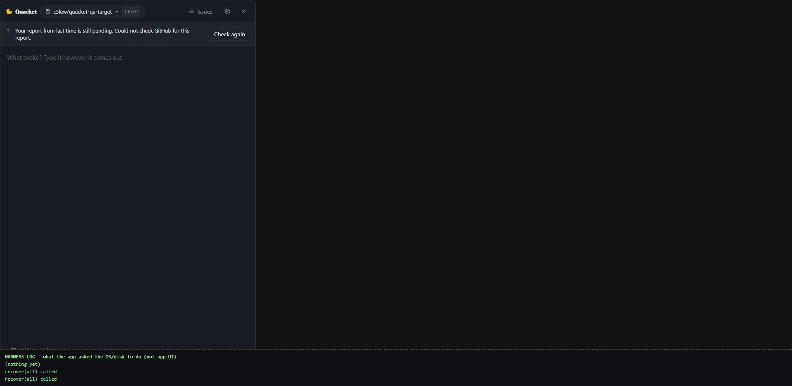
驗收項 13
什麼情況:剛才斷網或沒登入,現在恢復了,你按 Check again。
你會看到:那一列自己變成結論——例如「was filed as issue #58.」,按鈕跟著換成 View on GitHub。
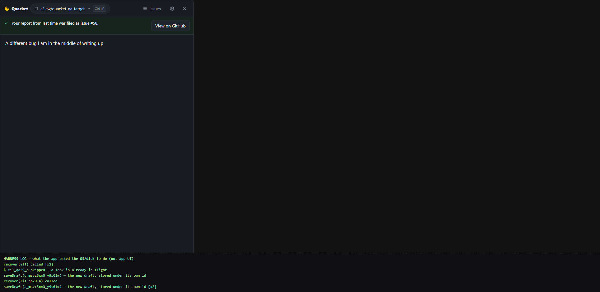
拿真的 GitHub 驗過:斷線那段期間 Quacket 一張 issue 都沒開;恢復後重問,GitHub 上是 1 張,不是 2 張。不會因為你多按一次就重複開票。
驗收項 14
什麼情況:舊那列還沒解決,你想直接回報新的問題。
你會看到:打字、貼截圖、Refine、Submit 一路走到底都正常,舊那列從頭到尾原地不動、沒有任何一個按鈕因為它而變灰。
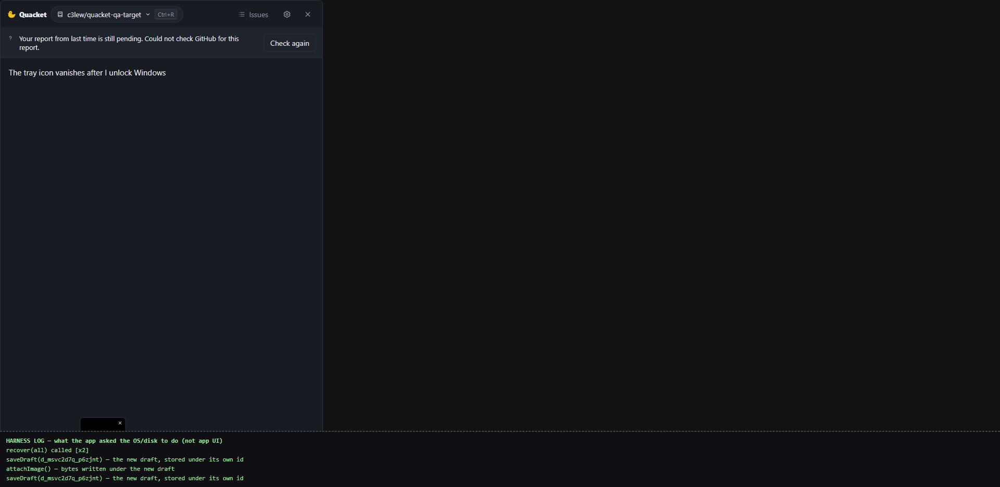
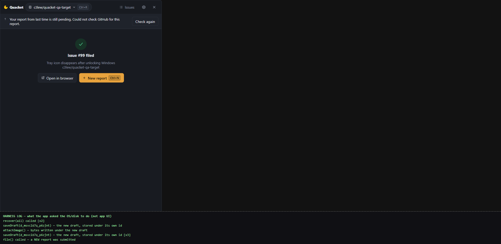
驗收項 15
什麼情況:新報告打一打不想寫了,按 Discard 整份丟掉——草稿能做的最狠的事。
你會看到:輸入框清空,舊那列還在,而且之後按 Check again 一樣救得回來。
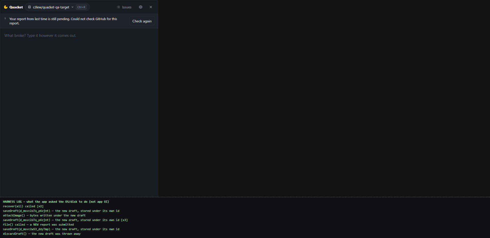
這條在真的硬碟上驗過:丟掉新草稿前後,舊報告存在磁碟上的內容一個位元組都沒變。
驗收項 16
什麼情況:Quacket 藏到系統列了,這時舊報告終於確認送出去了。
你會看到:一則系統通知「Your report from last time was filed as issue #57.」,視窗不會自己跳出來搶你正在做的事。
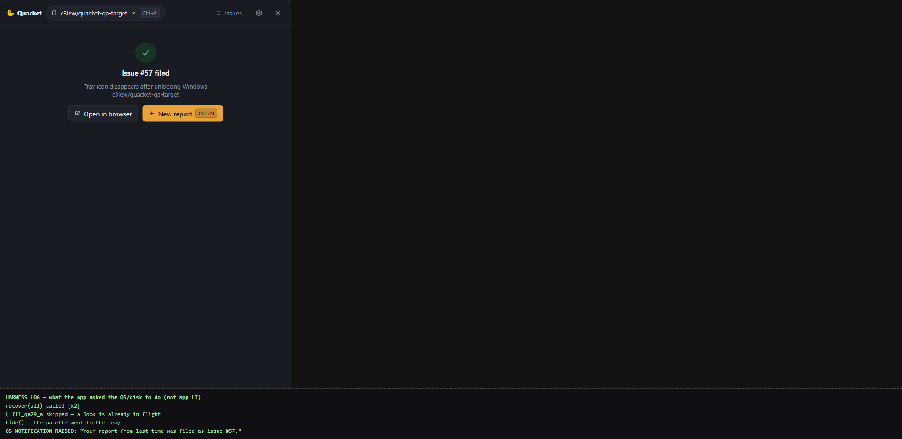
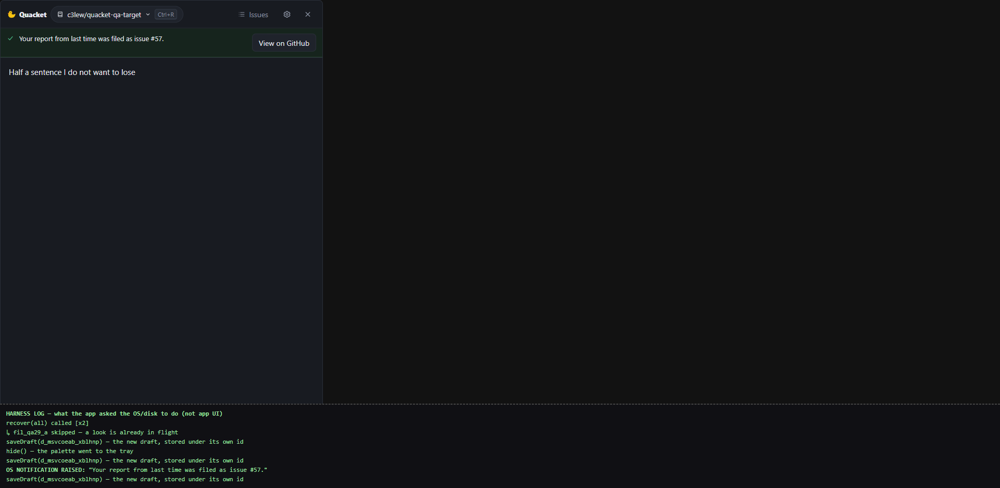
驗收項 17
什麼情況:藏起來期間,舊報告確定沒送成。
你會看到:通知「Your report from last time was not sent. Open Quacket to try again.」回到視窗那列寫「安全,可以再試一次」,配一顆 Try again。
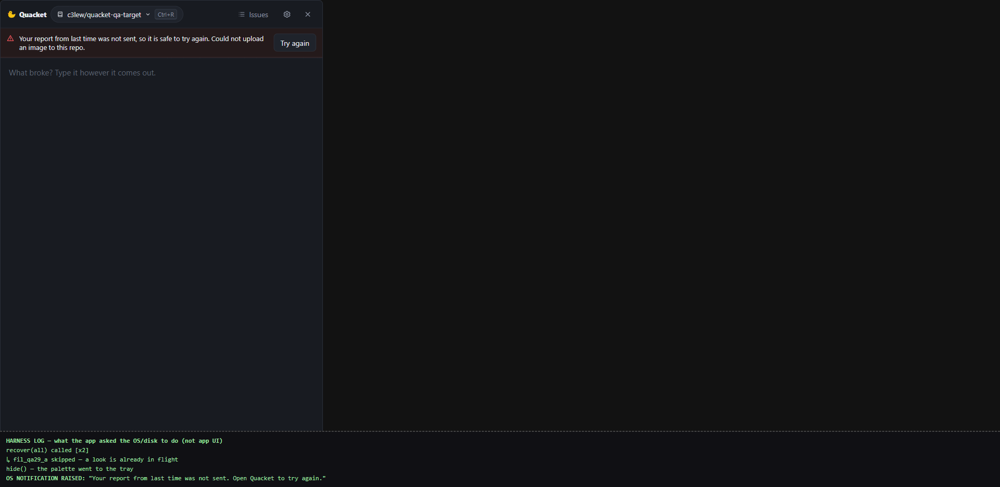
反過來也驗了:你開著視窗正常送出報告,不會多冒一個成功通知——畫面上已經寫「Issue #99 filed」了,再彈一個是吵人。
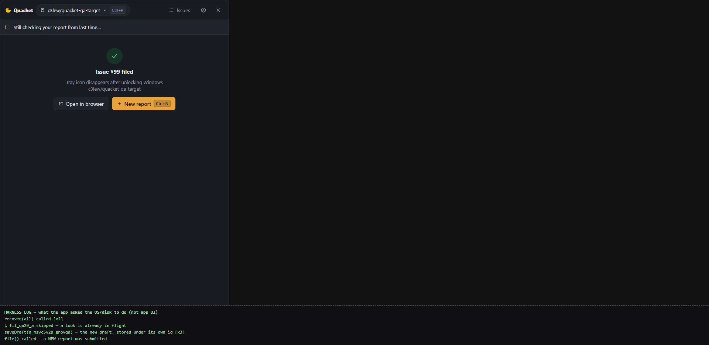
驗收項 18、38
什麼情況:舊報告可能落在四種狀況。
你會看到:四種各講一句白話 + 最多一顆按鈕,不會同時丟兩個選擇讓你猜:
Check again。View on GitHub。Try again。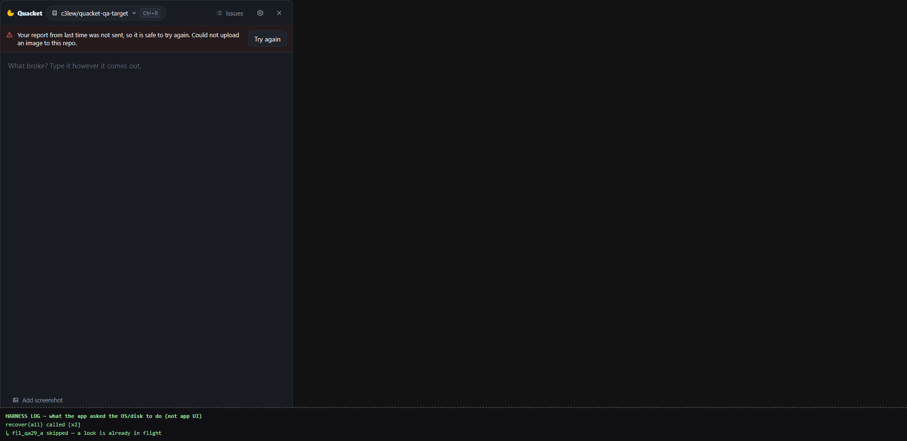
整頁文字掃過,沒有出現任何程式內部的字眼、上傳進度、或檔案路徑。
驗收項 18 的一個細節
當初驗收清單寫「四種狀況各給一個安全的下一步」。做出來的時候,「還在確認」那一種沒有給按鈕——因為它正在問 GitHub,這時候放一顆按鈕,按了不是沒反應、就是重複問一次,兩個都不好。轉圈圈 +「還在確認」已經在說「等一下」了。
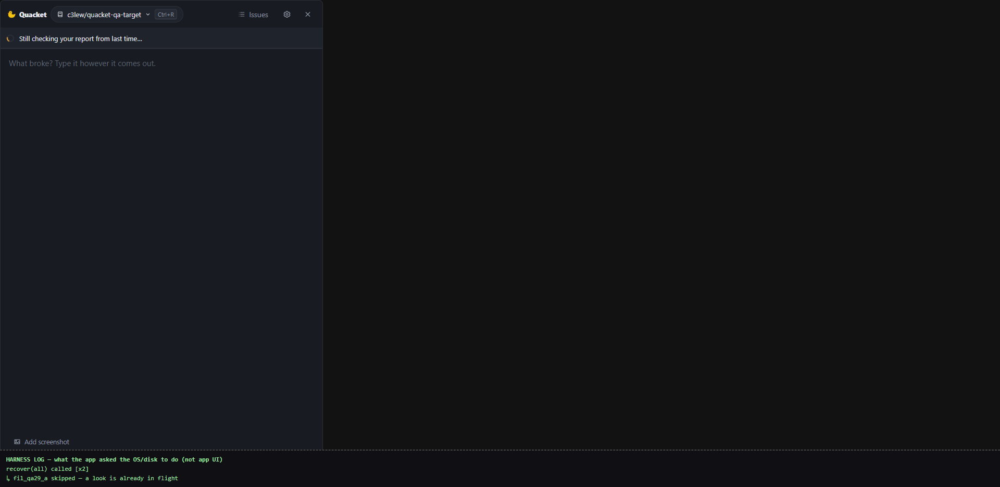
QA 那邊獨立判定「畫面是對的,是驗收清單那句話該改」。要你點頭:這樣可以,還是你就是要那顆按鈕?
這輪 QA 全程跑在瀏覽器裡,沒有經過 Windows 那層外殼。所以「發了系統通知」的意思是 Quacket 確實把那句話發出去了,不是「Windows 真的畫了一個泡泡出來」。系統列圖示、全域快捷鍵、自動更新也同理。
這塊要你在真的 app 上親手摸一下才算數——我可以現在把 app 起起來給你按。